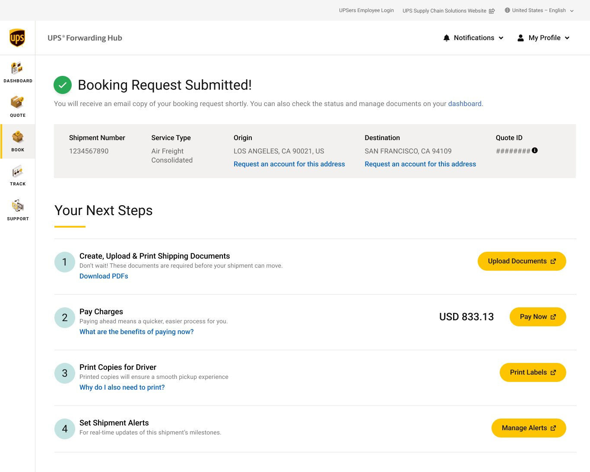
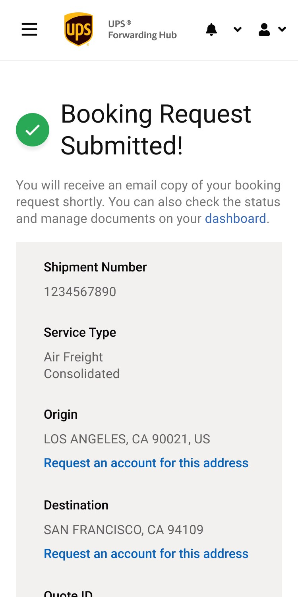

UPS Paying for freight as easily as a parcel: a credit card option for freight shippers who don’t have a UPS account, built into a system made for account holders.


I.
How do you make freight as easy to pay for as a parcel? Freight is the complicated side of UPS. Shipments cross borders with customs and international requirements, and an extensive back end calculates charges for every conceivable type of item anyone might want to ship. Most freight customers pay through an account on file, and many prefer it that way. But UPS wanted to open the door to smaller businesses: let them pay by credit card, the way consumers do, without needing an account first, for shipments within set heights and weights, between the US and Canada.
II.
Change as little as possible, in the right place. Account holders already knew the booking flow, so it stayed as it was. Payment became a step that comes after booking, on the confirmation page, where a shipper without an account is already looking for what to do next. Each step says why it matters, and the page only shows what applies: Pay Charges disappears for shippers with credit on their account, and Manage Alerts for those who have alerts turned on.
III.
Every path in leads to one payment page. Shippers don’t always pay right after booking, so I mapped every route they might take back: the confirmation page, the booking request email, the activity feed and a shipment’s detail page. Each one offers Pay Now while charges are due and shows Payment Received once they’re paid, so the status reads the same wherever a shipper looks.
IV.
A payment page that handles the hard parts quietly. The page explains why paying ahead helps, itemizes every charge, then asks only for the card and a billing address. Small decisions take care of the complexity: the back link changes to match where the shipper came from (and disappears when they arrive from email), State becomes Province and Zip becomes Postal Code when the country changes, the address autocompletes the way it does on ups.com, and an optional checkbox lets a one-time payer enroll in a billing account using what they just entered.
V.
Designed for every screen. Freight shippers work from a warehouse floor as often as a desk, so every new state was designed for tablet and mobile too. On smaller screens the next steps stack with their actions underneath, and the activity feed turns into cards that keep the price and payment status side by side.
VI.
What I did. I evolved the existing Forwarding Hub to match the ease of consumer checkout while keeping every required element in place. I mapped every path into payment, designed the confirmation, payment, error and success states and the email, defined the rules for what each kind of shipper sees, and carried it all through desktop, tablet and mobile.